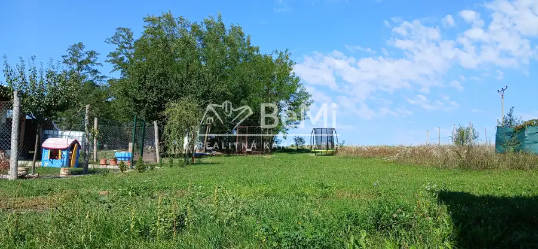

Predaj · Byt
Predaj, 4 izbový byt - Demandice (006-114-MIMI)
Demandice
85 000 €

- Dispozícia4-izbový
- Poschodie1. z 2
- StavKompletná rekonštrukcia
- VlastníctvoOsobné
O nehnuteľnosti
Ponúkame pekný, veľký slnečný 4 izbový byt s balkónom v Demandiciach.Byt sa nachádza v kľudnej časti obce s kompletnou občianskou vybavenosťou. V bytovom dome na prvom podlaží z dvoch. V byte sa momentálne vykonáva kompletná rekonštrukcia, ktorá bude ukončená koncom októbra. Byt sa bude predávať v stave holobyt, takže kúpelňu a kuchyňu si nový majiteľ može dokončiť podľa svojich predstáv.K bytu ako bonus je pekný slnečný pozemok o rozlohe cca 150m2V prípade záujmu kontaktujte: Bc Miroslav Miklóš, tel.: 0903 588 355, mail: miklos@realitybemi.skProstredníctvom nášho finančného poradcu Vám pomôžeme s financovaním kúpy nehnuteľností.NAŠE CENY SÚ VRÁTANE PROVÍZIE ZA KOMPLETNÝ SERVIS A SÚ SCHVÁLENÉ MAJITEĽOM.
Parametre
- Cellar area
- 4 m²
- Cena vrátane energií
- Nie
- Druh
- 4 izbový byt
- Dátum zverejnenia
- 07. 10. 2025
- Plocha balkónu v m2
- 5 m²
- Podlažie
- 1
- Počet izieb / miestností
- 4
- Počet nadzemných podlaží
- 2
- Stav nehnuteľnosti
- Kompletná rekonštrukcia
- Typ
- Predaj
- Vlastníctvo
- Osobné
- Vybavenie
- Balkón, Pivnica
- Vykurovanie
- Lokálne
- Úžitková plocha
- 0 m²
Kde to je


Ďalšie ponuky
Celá ponukaMohlo by Vás zaujímať
 PozemokNové
67 000 €Pozemok so záhradným domčekom - Levice / Mestský majer za nadjazdom (018-14-MIMI)
Levice
614 m²
PozemokNové
67 000 €Pozemok so záhradným domčekom - Levice / Mestský majer za nadjazdom (018-14-MIMI)
Levice
614 m²
 PozemokNové
103 800 €Slnečný stavebný pozemok - Drženice časť Kmeťovce (17-14-MIMI)
Drženice
20000 m²
PozemokNové
103 800 €Slnečný stavebný pozemok - Drženice časť Kmeťovce (17-14-MIMI)
Drženice
20000 m²
 PozemokNové
32 000 €Predaj, pozemok Krížny vrch - Levice (011-14-MIMI)
Levice
400 m²
PozemokNové
32 000 €Predaj, pozemok Krížny vrch - Levice (011-14-MIMI)
Levice
400 m²